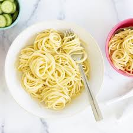

Butter Noodles Recipe

Butter Noodles is one of my favorite recipes, though it doesn't really
merit the name of being a recipe due to how easy it is!
Growing up, this was one of my comfort foods, and I still eat it at least once
a week when I need a quick meal. Don't be frightend of one of the three ingredients and
DO NOT overcomplicate this meal by emulsifying the pasta water into the butter.
You're making butter noodles, not a stupid versian of a Roman pasta dish.
Ingredients
- ~80g of cheap pasta, I like spaghetti but usually use a forkable type like fusilli
- 1 tablespoon of regular butter
- Shitty parm, aka the green topped bottle (please don't use freshly grated!)
- salt for water
Steps
- Boil the water. Once it comes to a boil, drop in the pasta and cook to the time on the box.
- Strain the pasta.
- Toss the butter into the still hot pot and melt it. Add the pasta to the pot and stir to coat in butter. Add parmasean. Stir.
- Plate in a cheap plastic bowl and if you're feeling fancy crack some fresh pepper on it. Maybe airfry some dino nuggets too.
Home